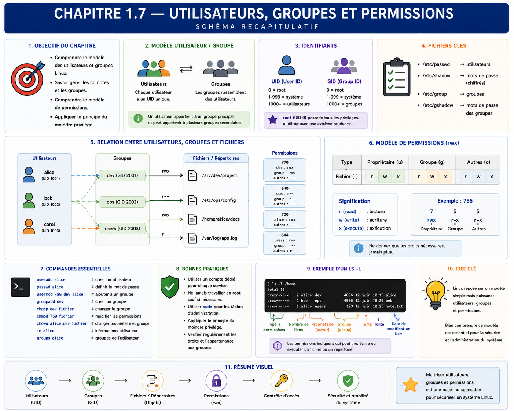

Chapitre 1.7 — Comprendre identités et permissions
Campagne 1 — Installation et fondations
« Le noyau autorise un processus en fonction de son identité, pas de son intention. »
Vous êtes ici
PARTIE I — Construire un socle sécurisé
Campagne 1
1.1 Pourquoi sécuriser un socle Linux ? ✔
1.2 Installer AlmaLinux minimal ✔
1.3 Comprendre les composants du système ✔
1.4 Établir la baseline du serveur ✔
1.5 Mettre à jour et gérer les dépôts ✔
1.6 Organiser les systèmes de fichiers ✔
► 1.7 Comprendre identités et permissions
1.8 Administrer avec sudo
1.9 Mission : mettre le serveur en sécurité
1.10 Créer le laboratoire Sentinel
Objectifs pédagogiques
À l'issue de ce chapitre, vous serez capable de :
- distinguer nom de compte, UID, groupe principal et groupes supplémentaires ;
- expliquer pourquoi un processus possède une identité effective ;
- reconnaître le type, le propriétaire, le groupe et les permissions
rwxd'un objet ; - prévoir une décision d'accès Unix simple ;
- concevoir l'identité initiale du futur service Sentinel.
Pourquoi ce chapitre existe
Les fichiers de Sentinel auront des propriétaires, son processus utilisera une identité et les administrateurs appartiendront à des groupes. Si tous les composants utilisent root ou des droits très larges, une erreur applicative devient une compromission du serveur.
Ce chapitre introduit le modèle nécessaire pour installer et observer le laboratoire. La campagne 2 étudiera en détail l'algorithme des permissions, les ACL, l'umask, les comptes système, PAM, les mots de passe, sudoers et les fichiers d'identité.
Nom lisible et identifiant numérique
Linux associe un nom de compte à un UID et un nom de groupe à un GID. Le noyau prend ses décisions avec les identifiants numériques ; les noms rendent l'administration lisible.
id
id root
getent passwd "$USER"
getent group wheel
Une entrée de compte décrit notamment le nom, l'UID, le GID principal, le répertoire personnel et le shell. getent interroge les sources d'identité configurées ; il est préférable à une lecture exclusive de /etc/passwd lorsque des annuaires seront ajoutés plus tard.
Les UID doivent rester cohérents pour les fichiers persistants et les partages. Renommer un compte ne change pas forcément son UID ; recréer un compte avec un autre UID peut laisser des fichiers orphelins ou attribués à la mauvaise identité.
Groupes principal et supplémentaires
Chaque processus possède un groupe principal et peut disposer de groupes supplémentaires. Les groupes permettent d'accorder un accès collectif sans dupliquer des règles pour chaque personne.
id
groups
getent group wheel
L'appartenance à un groupe est un privilège. Ajouter un utilisateur à wheel, à un groupe capable de lire des journaux sensibles ou à un groupe contrôlant une socket d'administration élargit ses possibilités. Le nom du groupe ne suffit pas : il faut connaître les objets auxquels il donne accès.
Après une modification de groupes, une session existante peut conserver son ancien ensemble de groupes. Ouvrir une nouvelle session permet de charger la nouvelle identité ; bricoler autour de ce comportement risque de rendre les tests incohérents.
Comptes humains et comptes de service
Un compte humain représente une personne et doit permettre la traçabilité. Un compte de service représente un logiciel et limite les ressources accessibles en cas de défaut.
| Propriété | Compte humain | Compte de service |
|---|---|---|
| finalité | administration ou usage interactif | exécution d'une fonction précise |
| connexion | autorisée selon politique | généralement interdite |
| répertoire personnel | espace de travail personnel | absent ou limité au besoin |
| secret interactif | selon authentification | généralement aucun mot de passe |
| durée | cycle d'arrivée et de départ | cycle de vie du service |
Sentinel utilisera un compte système dédié. Ce compte ne sera pas créé manuellement dans ce chapitre : son UID, son shell, ses répertoires et son propriétaire de cycle de vie seront définis ensemble dans la campagne 2 puis dans le paquet.
Le cas particulier de root
Le compte root porte l'UID 0. Il dispose généralement des capacités nécessaires pour contourner de nombreux contrôles d'accès discrétionnaires, administrer les identités, les paquets, le réseau et le cycle de vie du système. Une erreur exécutée avec cette identité possède donc un impact potentiel bien supérieur à la même erreur sous un compte ordinaire.
root n'est toutefois pas extérieur au modèle de sécurité. SELinux peut lui refuser une opération, un système de fichiers peut être monté en lecture seule et les namespaces ou les restrictions systemd peuvent limiter un processus. Le principe n'est pas « root peut tout », mais « l'UID 0 concentre des privilèges qui doivent être utilisés ponctuellement et sous contrôle ».
L'identité appartient au processus
Un fichier n'« agit » pas. Lorsqu'un programme est lancé, le processus reçoit une identité issue de son parent ou préparée par un mécanisme comme systemd. Le noyau compare cette identité aux règles de l'objet demandé.
Observez l'identité des processus :
ps -eo user,group,pid,ppid,comm --sort=user | head -n 25
systemctl show chronyd -p User -p Group -p MainPID
Une unité peut ne pas déclarer User= et démarrer avec l'identité par défaut du gestionnaire système, souvent root. Ce comportement doit être compris avant de conclure qu'un service a besoin de tous ces privilèges.
Lire les permissions Unix
ls -l affiche type, permissions, propriétaire et groupe :
-rw-r----- 1 sentinel sentinel 840 Jul 17 10:00 sentinel.conf
│└┬┘└┬┘└┬┘ └──┬───┘ └──┬───┘
│ │ │ │ │ └─ groupe propriétaire
│ │ │ │ └──────────── propriétaire
│ │ │ └─ autres
│ │ └──── groupe
│ └─────── propriétaire
└───────── type : fichier ordinaire
Le premier caractère ne sert pas aux permissions : il décrit le type d'objet.
| Caractère | Type d'objet |
|---|---|
- |
fichier ordinaire |
d |
répertoire |
l |
lien symbolique |
c |
périphérique caractère |
b |
périphérique bloc |
s |
socket Unix |
p |
tube nommé ou FIFO |
Cette information détermine la manière d'interpréter les opérations possibles. Une socket ou un périphérique n'est pas un document ordinaire, même si ls -l affiche aussi un propriétaire, un groupe et un mode.
Pour un fichier : r permet de lire son contenu, w de le modifier et x de l'exécuter. Pour un répertoire : r permet d'en lister les noms, w d'y créer ou supprimer des entrées, et x de le traverser pour atteindre un nom connu. Les permissions d'un répertoire ne sont donc pas une simple copie de celles d'un fichier.
ls -ld /etc /var/lib /tmp
stat -c '%A %a %U %G %n' /etc/passwd /etc/shadow /tmp
La notation numérique regroupe les bits : lecture vaut 4, écriture 2, exécution 1. 0640 signifie rw- pour le propriétaire, r-- pour le groupe et aucun droit pour les autres. Le zéro initial rappelle qu'il s'agit d'un mode et laisse apparaître les bits spéciaux, étudiés plus tard.
Prévoir une décision simple
Pour les permissions Unix classiques, le noyau sélectionne une seule classe : propriétaire si l'UID correspond ; sinon groupe si un GID correspond ; sinon autres. Il n'additionne pas arbitrairement les trois colonnes.
Ce modèle est volontairement incomplet : ACL, bits spéciaux, capacités, montage en lecture seule et SELinux peuvent ajouter des règles. La campagne 2 les intégrera progressivement.
L'accès dépend de tout le chemin
Lire /var/lib/sentinel/report.json demande de traverser /, /var, /var/lib et /var/lib/sentinel, puis de lire le fichier. Le mode du dernier objet ne suffit pas. Un répertoire parent sans bit x pour la classe sélectionnée bloque l'accès même si le fichier est annoncé 0644.
La suppression illustre une autre subtilité : supprimer un nom est une opération sur le répertoire parent. Un utilisateur peut parfois supprimer un fichier qu'il ne peut pas modifier, s'il possède les droits adéquats sur le répertoire. Des mécanismes comme le sticky bit de /tmp modifient ce comportement ; ils seront étudiés dans la campagne 2.
Pour raisonner sans essais destructifs, collectez :
namei -l /var/lib/sentinel/report.json
stat -c '%A %a %u:%g %n' /var/lib/sentinel/report.json
id sentinel
Si le compte n'existe pas encore, travaillez avec une identité fictive sur papier. Écrivez son UID, son groupe principal, ses groupes supplémentaires et la classe sélectionnée à chaque étape. Cette méthode est plus fiable que de modifier successivement les modes jusqu'à disparition de l'erreur.
Les noms de groupes doivent enfin exprimer un rôle. Un groupe sentinel-readers est plus facile à gouverner qu'un groupe générique apps, mais sa création n'est justifiée que si plusieurs identités ont réellement besoin du même accès. Multiplier les groupes sans propriétaire ni procédure de retrait déplace la complexité au lieu de la résoudre.
Modifier dans un laboratoire contrôlé
Dans votre répertoire personnel, créez un fichier et observez son mode :
mkdir -p ~/identity-lab
printf '%s\n' 'configuration de test' > ~/identity-lab/sentinel.conf
stat -c '%A %a %U %G %n' ~/identity-lab/sentinel.conf
chmod 0640 ~/identity-lab/sentinel.conf
stat -c '%A %a %U %G %n' ~/identity-lab/sentinel.conf
chmod accepte une notation numérique ou symbolique. La seconde exprime une modification relative :
chmod u+rw,g+r,o-rwx ~/identity-lab/sentinel.conf
u, g et o désignent propriétaire, groupe et autres ; +, - et = ajoutent, retirent ou fixent les bits indiqués. La notation numérique décrit plus directement le mode final, ce qui la rend fréquente dans les scripts et playbooks.
chown change le propriétaire, tandis que chgrp change le groupe. Attribuer un fichier à une autre identité nécessite généralement un privilège administratif ; un utilisateur peut seulement choisir certains groupes auxquels il appartient selon les règles du système. N'utilisez pas sudo chown dans le laboratoire sans plan de restitution : un fichier de votre répertoire personnel pourrait ne plus vous appartenir.
Les modes larges comme 0777 ne sont pas un diagnostic. Ils ouvrent simultanément lecture, écriture et exécution à tous, masquent la règle réellement nécessaire et n'agissent pas sur toutes les couches de sécurité.
Concevoir les accès de Sentinel
À partir de l'arborescence du chapitre 1.6, la première matrice d'accès devient :
| Objet | Administrateur | Processus sentinel |
Autres utilisateurs |
|---|---|---|---|
/usr/bin/sentinel |
installe par RPM | lit et exécute | lit/exécute selon politique |
/etc/sentinel/ |
configure | lit le strict nécessaire | aucun accès sensible |
/var/lib/sentinel/ |
sauvegarde et maintient | lit et écrit | aucun |
| journaux | consulte selon rôle | émet | accès contrôlé |
/run/sentinel/ |
diagnostique | crée et utilise | aucun |
Cette matrice exprime des besoins, pas encore tous les modes exacts. Les chapitres 2.1 à 2.4 traduiront les besoins en permissions Unix, ACL, umask et attributs.
TP 1 — Lire des identités réelles
Choisissez votre session et trois services actifs. Pour chacun, relevez : nom, UID, groupe principal, groupes supplémentaires utiles, PID principal et éventuel shell de connexion.
id
systemctl list-units --type=service --state=running
systemctl show NOM.service -p User -p Group -p MainPID
ps -o user,group,pid,comm -p PID
Expliquez pourquoi chaque service observé utilise root ou une identité dédiée. Si la raison n'est pas connue, notez « à analyser » plutôt que d'inventer une justification.
TP 2 — Tester fichier et répertoire
Dans ~/identity-lab, créez un répertoire en 0750 et un fichier en 0640. Expliquez les opérations possibles pour propriétaire, groupe et autres : lister le répertoire, traverser, lire le fichier, modifier son contenu et supprimer son nom.
Utilisez namei -l et stat pour vérifier votre raisonnement. Testez seulement avec des identités prévues par le laboratoire ; ne créez pas de compte partagé pour simplifier l'exercice.
Mission d'ingénieur — Définir l'identité de Sentinel
Produisez une fiche de conception comprenant :
- compte et groupe dédiés ;
- absence ou présence justifiée d'un shell et d'un répertoire personnel ;
- identité préparée par systemd ;
- matrice des accès aux chemins Sentinel ;
- séparation entre administrateurs et processus ;
- risque si Sentinel s'exécutait comme
root; - contrôles à détailler dans la campagne 2 ;
- preuves attendues avec
id,ps,statetnamei.
Ne choisissez pas encore un UID fixe sans contrainte de déploiement. La stabilité des identifiants sera décidée avec le packaging, les volumes et l'éventuel annuaire.
Impact sur Sentinel
Sentinel ne sera pas une extension du compte administrateur. Son processus disposera d'une identité de service et recevra seulement les accès nécessaires à sa configuration, son état et son runtime. Cette séparation limitera l'impact d'une vulnérabilité et rendra les journaux plus explicites.
Synthèse
- Les noms sont résolus vers des UID et GID utilisés par le noyau.
- Un processus possède une identité qui détermine une partie de ses accès.
- Les comptes humains et les comptes de service ont des cycles et des usages différents.
rootporte l'UID 0 et concentre de nombreux privilèges, sans être soustrait à toutes les autres couches de sécurité.- Le premier caractère de
ls -ldistingue fichier, répertoire, lien, périphérique, socket ou tube nommé. - Les bits
rwxn'ont pas exactement le même sens sur un fichier et un répertoire. - Les permissions classiques sélectionnent propriétaire, groupe ou autres.
- Les besoins d'accès de Sentinel doivent être écrits avant de choisir des modes.
- La campagne 2 approfondira l'algorithme et les contrôles avancés sans répéter cette introduction.
Schéma récapitulatif

Pour aller plus loin
Consultez man id, man getent, man 5 passwd, man 7 credentials et man 7 inode. La campagne suivante sur les identités reprendra ces notions au niveau opérationnel.
Chapitre suivant : conserver une identité nominative pour travailler et n'élever les privilèges que pour une commande d'administration.
← 1.6 — Organiser les systèmes de fichiers · 1.8 — Administrer avec sudo →